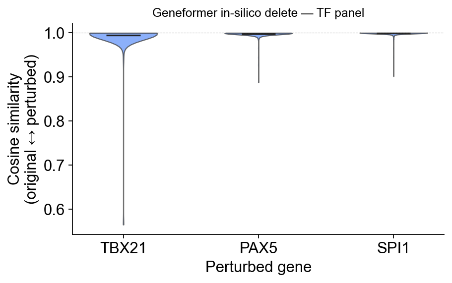
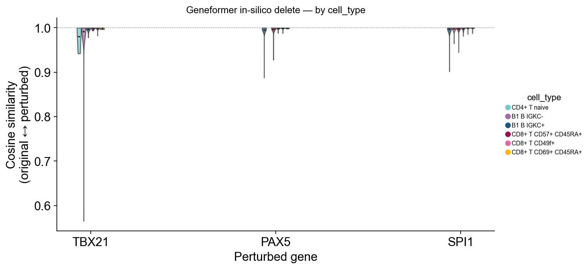
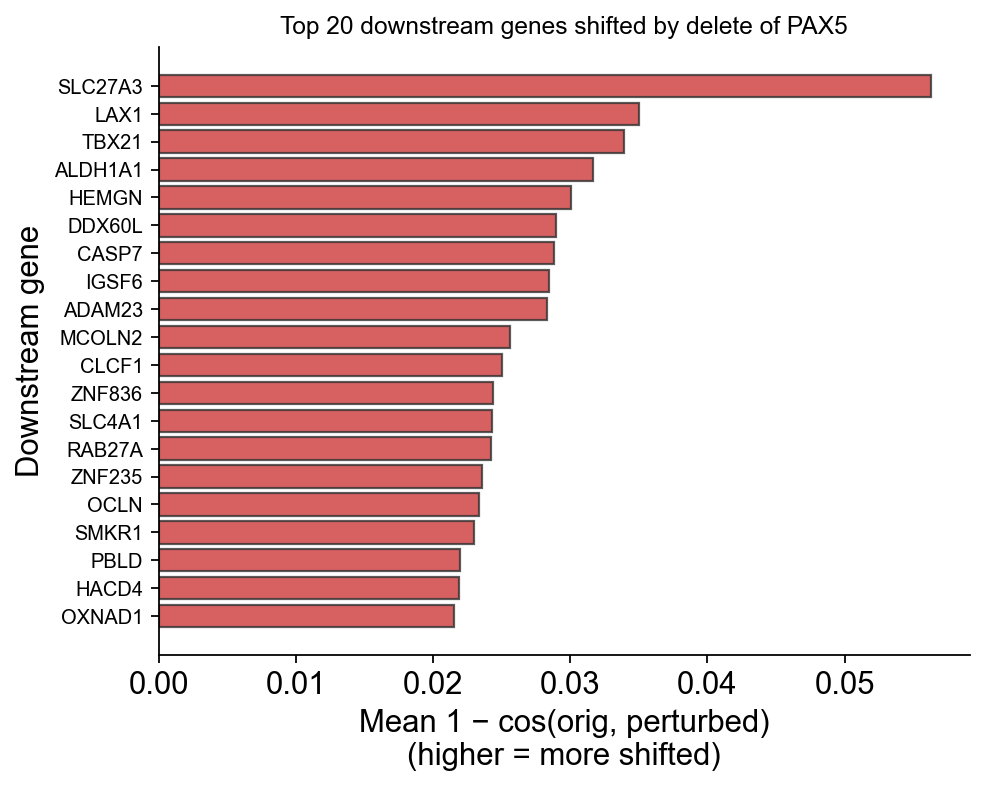
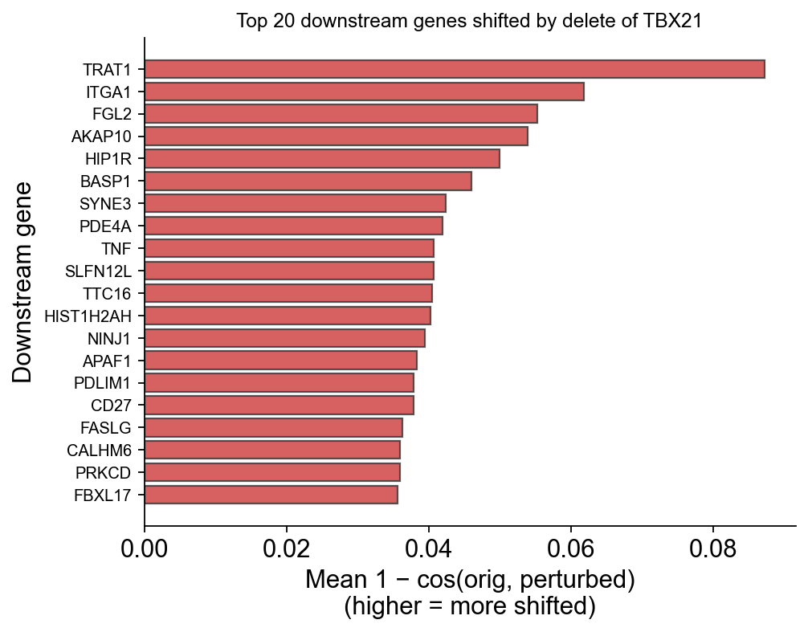
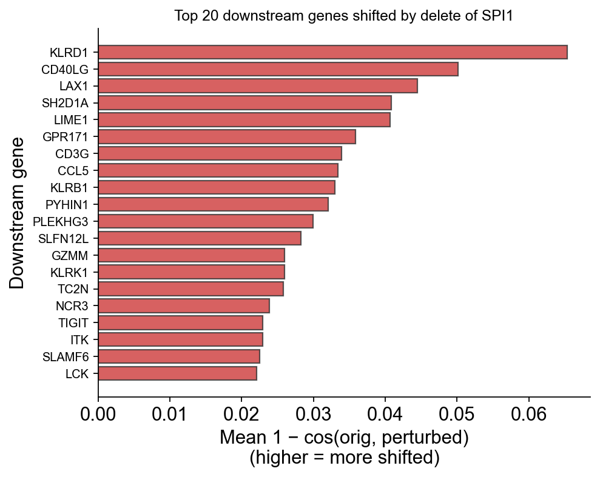

GeneFormer#
Geneformer is a foundational transformer model pretrained on a large-scale corpus of single cell transcriptomes to enable context-aware predictions in settings with limited data in network biology.
Here, you can use omicverse.llm.SCLLMManager(model_type="geneformer") to call this model directly.
Cite: Theodoris, C. V., Xiao, L., Chopra, A., Chaffin, M. D., Al Sayed, Z. R., Hill, M. C., … & Ellinor, P. T. (2023). Transfer learning enables predictions in network biology. Nature, 618(7965), 616-624.
import scanpy as sc
import omicverse as ov
ov.plot_set(font_path='Arial')
# Enable auto-reload for development
%load_ext autoreload
%autoreload 2
🔬 Starting plot initialization...
Using already downloaded Arial font from: /tmp/omicverse_arial.ttf
Registered as: Arial
🧬 Detecting GPU devices…
✅ NVIDIA CUDA GPUs detected: 1
• [CUDA 0] NVIDIA H100 80GB HBM3
Memory: 79.1 GB | Compute: 9.0
____ _ _ __
/ __ \____ ___ (_)___| | / /__ _____________
/ / / / __ `__ \/ / ___/ | / / _ \/ ___/ ___/ _ \
/ /_/ / / / / / / / /__ | |/ / __/ / (__ ) __/
\____/_/ /_/ /_/_/\___/ |___/\___/_/ /____/\___/
🔖 Version: 2.1.3rc1 📚 Tutorials: https://omicverse.readthedocs.io/
✅ plot_set complete.
Load example datasets#
For this tutorial, we use three batches from the NeurIPS 2021 single-cell competition dataset, which provides an excellent test case for batch integration and cell type annotation.
adata1=ov.read('data/neurips2021_s1d3.h5ad')
adata1.obs['batch']='s1d3'
adata2=ov.read('data/neurips2021_s2d1.h5ad')
adata2.obs['batch']='s2d1'
adata3=ov.read('data/neurips2021_s3d7.h5ad')
adata3.obs['batch']='s3d7'
adata=sc.concat([adata1,adata2,adata3],merge='same')
adata
AnnData object with n_obs × n_vars = 27423 × 13953
obs: 'GEX_n_genes_by_counts', 'GEX_pct_counts_mt', 'GEX_size_factors', 'GEX_phase', 'ADT_n_antibodies_by_counts', 'ADT_total_counts', 'ADT_iso_count', 'cell_type', 'batch', 'ADT_pseudotime_order', 'GEX_pseudotime_order', 'Samplename', 'Site', 'DonorNumber', 'Modality', 'VendorLot', 'DonorID', 'DonorAge', 'DonorBMI', 'DonorBloodType', 'DonorRace', 'Ethnicity', 'DonorGender', 'QCMeds', 'DonorSmoker', 'is_train'
var: 'feature_types', 'gene_id'
obsm: 'ADT_X_pca', 'ADT_X_umap', 'ADT_isotype_controls', 'GEX_X_pca', 'GEX_X_umap'
layers: 'counts'
adata=ov.pp.preprocess(adata,mode='shiftlog|pearson',
n_HVGs=3000,batch_key=None,target_sum=1e4)
adata
🔍 [2026-05-18 16:28:41] Running preprocessing in 'cpu' mode...
Begin robust gene identification
After filtration, 13953/13953 genes are kept.
Among 13953 genes, 13953 genes are robust.
✅ Robust gene identification completed successfully.
Begin size normalization: shiftlog and HVGs selection pearson
🔍 Count Normalization:
Target sum: 10000.0
Exclude highly expressed: True
Max fraction threshold: 0.2
⚠️ Excluding 9 highly-expressed genes from normalization computation
Excluded genes: ['IGKC', 'HBB', 'MALAT1', 'IGHA1', 'IGHM', 'HBA2', 'IGLC1', 'IGLC2', 'IGLC3']
✅ Count Normalization Completed Successfully!
✓ Processed: 27,423 cells × 13,953 genes
✓ Runtime: 1.66s
🔍 Highly Variable Genes Selection (Experimental):
Method: pearson_residuals
Target genes: 3,000
Theta (overdispersion): 100
✅ Experimental HVG Selection Completed Successfully!
✓ Selected: 3,000 highly variable genes out of 13,953 total (21.5%)
✓ Results added to AnnData object:
• 'highly_variable': Boolean vector (adata.var)
• 'highly_variable_rank': Float vector (adata.var)
• 'highly_variable_nbatches': Int vector (adata.var)
• 'highly_variable_intersection': Boolean vector (adata.var)
• 'means': Float vector (adata.var)
• 'variances': Float vector (adata.var)
• 'residual_variances': Float vector (adata.var)
Time to analyze data in cpu: 5.51 seconds.
✅ Preprocessing completed successfully.
Added:
'highly_variable_features', boolean vector (adata.var)
'means', float vector (adata.var)
'variances', float vector (adata.var)
'residual_variances', float vector (adata.var)
'counts', raw counts layer (adata.layers)
End of size normalization: shiftlog and HVGs selection pearson
╭─ SUMMARY: preprocess ──────────────────────────────────────────────╮
│ Duration: 6.6794s │
│ Shape: 27,423 x 13,953 (Unchanged) │
│ │
│ CHANGES DETECTED │
│ ──────────────── │
│ ● VAR │ ✚ highly_variable (bool) │
│ │ ✚ highly_variable_features (bool) │
│ │ ✚ highly_variable_rank (float) │
│ │ ✚ means (float) │
│ │ ✚ n_cells (int) │
│ │ ✚ percent_cells (float) │
│ │ ✚ residual_variances (float) │
│ │ ✚ robust (bool) │
│ │ ✚ variances (float) │
│ │
│ ● UNS │ ✚ REFERENCE_MANU │
│ │ ✚ _ov_provenance │
│ │ ✚ history_log │
│ │ ✚ hvg │
│ │ ✚ log1p │
│ │ ✚ status │
│ │ ✚ status_args │
│ │
╰────────────────────────────────────────────────────────────────────╯
AnnData object with n_obs × n_vars = 27423 × 13953
obs: 'GEX_n_genes_by_counts', 'GEX_pct_counts_mt', 'GEX_size_factors', 'GEX_phase', 'ADT_n_antibodies_by_counts', 'ADT_total_counts', 'ADT_iso_count', 'cell_type', 'batch', 'ADT_pseudotime_order', 'GEX_pseudotime_order', 'Samplename', 'Site', 'DonorNumber', 'Modality', 'VendorLot', 'DonorID', 'DonorAge', 'DonorBMI', 'DonorBloodType', 'DonorRace', 'Ethnicity', 'DonorGender', 'QCMeds', 'DonorSmoker', 'is_train'
var: 'feature_types', 'gene_id', 'n_cells', 'percent_cells', 'robust', 'highly_variable_features', 'means', 'variances', 'residual_variances', 'highly_variable_rank', 'highly_variable'
uns: 'history_log', 'log1p', 'hvg', 'status', 'status_args', 'REFERENCE_MANU', '_ov_provenance'
obsm: 'ADT_X_pca', 'ADT_X_umap', 'ADT_isotype_controls', 'GEX_X_pca', 'GEX_X_umap'
layers: 'counts'
adata.raw = adata
adata = adata[:, adata.var.highly_variable_features]
adata
# Geneformer V2 tokenizer custom_attr_dict requires this column.
adata.obs['cell_barcode'] = adata.obs_names.values
Download pre-trained model and dictionaries#
The Geneformer model requires several components:
Model weights: Pre-trained transformer parameters (~420MB)
Gene dictionaries: Mapping between genes and tokens
Gene median values: For rank-based encoding
Ensembl mappings: Gene symbol to ID conversions
Download from HuggingFace: https://huggingface.co/ctheodoris/Geneformer/tree/main/Geneformer-V2-104M
#!/usr/bin/env python3
import os
import requests
urls = [
"https://huggingface.co/ctheodoris/Geneformer/resolve/main/Geneformer-V2-104M/model.safetensors?download=true",
"https://huggingface.co/ctheodoris/Geneformer/resolve/main/Geneformer-V2-104M/config.json?download=true",
"https://huggingface.co/ctheodoris/Geneformer/resolve/main/Geneformer-V2-104M/generation_config.json?download=true",
"https://huggingface.co/ctheodoris/Geneformer/resolve/main/Geneformer-V2-104M/training_args.bin?download=true",
]
output_dir = "llm_model/models/geneformer/Geneformer-V2-104M"
os.makedirs(output_dir, exist_ok=True)
for url in urls:
filename = url.split('?')[0].split('/')[-1]
filepath = os.path.join(output_dir, filename)
print(f"Downloading {filename} ...")
resp = requests.get(url, stream=True)
resp.raise_for_status()
with open(filepath, "wb") as f:
for chunk in resp.iter_content(chunk_size=8192):
if chunk:
f.write(chunk)
print(f"Saved to {filepath}")
print("All files downloaded successfully.")
Downloading model.safetensors ...
Saved to llm_model/models/geneformer/Geneformer-V2-104M/model.safetensors
Downloading config.json ...
Saved to llm_model/models/geneformer/Geneformer-V2-104M/config.json
Downloading generation_config.json ...
Saved to llm_model/models/geneformer/Geneformer-V2-104M/generation_config.json
Downloading training_args.bin ...
Saved to llm_model/models/geneformer/Geneformer-V2-104M/training_args.bin
All files downloaded successfully.
#!/usr/bin/env python3
import os
import requests
urls = [
"https://huggingface.co/ctheodoris/Geneformer/resolve/main/geneformer/ensembl_mapping_dict_gc104M.pkl?download=true",
"https://huggingface.co/ctheodoris/Geneformer/resolve/main/geneformer/gene_median_dictionary_gc104M.pkl?download=true",
"https://huggingface.co/ctheodoris/Geneformer/resolve/main/geneformer/gene_name_id_dict_gc104M.pkl?download=true",
"https://huggingface.co/ctheodoris/Geneformer/resolve/main/geneformer/token_dictionary_gc104M.pkl?download=true",
]
output_dir = "llm_model/models/geneformer"
os.makedirs(output_dir, exist_ok=True)
for url in urls:
filename = url.split('?')[0].split('/')[-1]
filepath = os.path.join(output_dir, filename)
print(f"Downloading {filename} ...")
resp = requests.get(url, stream=True)
resp.raise_for_status()
with open(filepath, "wb") as f:
for chunk in resp.iter_content(chunk_size=8192):
if chunk:
f.write(chunk)
print(f"Saved to {filepath}")
print("All files downloaded successfully.")
Downloading ensembl_mapping_dict_gc104M.pkl ...
Saved to llm_model/models/geneformer/ensembl_mapping_dict_gc104M.pkl
Downloading gene_median_dictionary_gc104M.pkl ...
Saved to llm_model/models/geneformer/gene_median_dictionary_gc104M.pkl
Downloading gene_name_id_dict_gc104M.pkl ...
Saved to llm_model/models/geneformer/gene_name_id_dict_gc104M.pkl
Downloading token_dictionary_gc104M.pkl ...
Saved to llm_model/models/geneformer/token_dictionary_gc104M.pkl
All files downloaded successfully.
Initialize Geneformer V2 model#
Geneformer V2 is the latest version with improved performance and a larger parameter count (104M). The model architecture is based on BERT with modifications for single-cell data.
manager = ov.llm.SCLLMManager(
model_type='geneformer',
model_version='V2',
device='cuda',
)
#analysis/omic_test/llm_model/Geneformer/geneformer/ensembl_mapping_dict_gc104M.pkl
manager.model.load_model(
'llm_model/models/geneformer/Geneformer-V2-104M',
gene_median_file='llm_model/models/geneformer/gene_median_dictionary_gc104M.pkl',
token_dictionary_file='llm_model/models/geneformer/token_dictionary_gc104M.pkl',
gene_mapping_file='llm_model/models/geneformer/ensembl_mapping_dict_gc104M.pkl'
)
[Loaded] Geneformer model initialized (version: V2)
[Loading] Loading Geneformer model
[Loaded] Tokenizer initialized with external dictionary files
[Loaded] Geneformer model loaded successfully
Zero-shot embedding generation#
Generate embeddings using the pre-trained Geneformer model.
The resulting 768-dimensional embeddings capture cellular states based on gene expression patterns:
embeddings = manager.get_embeddings(adata,max_ncells=100000)
[🔬Cells] Data Summary:
Cells: 27,423
Genes: 3,000
Batches: 3
s3d7: 11,230 cells
s2d1: 10,258 cells
s1d3: 5,935 cells
[Embedding] Starting get_embeddings...
cells: 27,423
genes: 3,000
[Preprocessing] Preprocessing data for Geneformer...
[Loaded] Normalized total counts
[Preprocessing] Preprocessing completed: 27423 cells × 3000 genes
[Predicting] Extracting cell embeddings with Geneformer...
[Preprocessing] Converting data to Geneformer format
[Preprocessing] Preparing data for Geneformer tokenization
[Preprocessing] Adding ensembl_id column to adata.var
[Warning] Using gene symbols as ensembl_id (may cause filtering)
[ℹ️Info] Geneformer works best with Ensembl gene IDs
[ℹ️Info] Gene mapping analysis:
[Preprocessing] Proactive gene symbol mapping...
[Loaded] Successfully mapped 2767 genes to Ensembl IDs
[Warning] Adding n_counts column to adata.obs...
✓ Added n_counts: mean=9915.1, std=42.4
✓ cell_barcode column already present
[Preprocessing] Tokenizing data for Geneformer
[Preprocessing] Attempting real Geneformer tokenization...
/tmp/tmpqx10164e/input/temp_data.h5ad has no column attribute 'filter_pass'; tokenizing all cells.
[Loaded] Tokenized 27423 cells
Creating dataset.
[Training] Extracting embeddings...
[Loaded] Using all 27423 cells (preserving order)
[Loaded] Extracted embeddings from EmbExtractor: (27423, 768)
[✅Complete] get_embeddings completed successfully!
[✅Complete] Results summary:
embedding_shape: (27423, 768)
embedding_dim: 768
#adata.obsm['X_geneformer'] = df.loc[adata.obs.index,[f'emb_{i}' for i in range(0,768)]]
adata.obsm['X_geneformer'] = embeddings
sc.pp.neighbors(adata, use_rep='X_geneformer')
sc.tl.umap(adata)
ov.pl.embedding(
adata,
basis='X_umap',
color=['batch', 'cell_type']
)
{kind=link}
Fine-tuning for cell type classification#
Fine-tune Geneformer on a reference dataset to adapt it for specific cell type recognition. The fine-tuning process updates the classification head while keeping most transformer layers frozen to prevent overfitting.
reference_adata=adata[adata.obs['batch']=='s1d3']
reference_adata
View of AnnData object with n_obs × n_vars = 5935 × 3000
obs: 'GEX_n_genes_by_counts', 'GEX_pct_counts_mt', 'GEX_size_factors', 'GEX_phase', 'ADT_n_antibodies_by_counts', 'ADT_total_counts', 'ADT_iso_count', 'cell_type', 'batch', 'ADT_pseudotime_order', 'GEX_pseudotime_order', 'Samplename', 'Site', 'DonorNumber', 'Modality', 'VendorLot', 'DonorID', 'DonorAge', 'DonorBMI', 'DonorBloodType', 'DonorRace', 'Ethnicity', 'DonorGender', 'QCMeds', 'DonorSmoker', 'is_train', 'cell_barcode'
var: 'feature_types', 'gene_id', 'n_cells', 'percent_cells', 'robust', 'highly_variable_features', 'means', 'variances', 'residual_variances', 'highly_variable_rank', 'highly_variable'
uns: 'history_log', 'log1p', 'hvg', 'status', 'status_args', 'REFERENCE_MANU', '_ov_provenance', 'neighbors', 'umap', 'batch_colors_rgba', 'batch_colors', 'cell_type_colors_rgba', 'cell_type_colors'
obsm: 'ADT_X_pca', 'ADT_X_umap', 'ADT_isotype_controls', 'GEX_X_pca', 'GEX_X_umap', 'X_geneformer', 'X_umap'
layers: 'counts'
obsp: 'distances', 'connectivities'
reference_adata.obs['celltype']=reference_adata.obs['cell_type'].copy()
fine_tune_results = manager.model.fine_tune(
train_adata=reference_adata,
epochs=10, #
batch_size=32, #
lr=1e-4, #
)
🔧 Fine-tuning Geneformer for annotation task...
Cell types detected: ['CD14+ Mono', 'CD8+ T naive', 'NK', 'T reg', 'CD8+ T CD57+ CD45RA+', 'Transitional B', 'Lymph prog', 'Naive CD20+ B IGKC+', 'Normoblast', 'Reticulocyte', 'CD4+ T naive', 'CD4+ T activated', 'CD8+ T TIGIT+ CD45RO+', 'B1 B IGKC+', 'CD4+ T activated integrinB7+', 'Erythroblast', 'MAIT', 'B1 B IGKC-', 'CD8+ T CD49f+', 'Naive CD20+ B IGKC-', 'G/M prog', 'Proerythroblast', 'HSC', 'CD16+ Mono', 'cDC2', 'CD8+ T CD69+ CD45RO+', 'pDC', 'CD8+ T CD69+ CD45RA+', 'Plasma cell IGKC+', 'MK/E prog']
[Preprocessing] Creating tokenized dataset
[Preprocessing] Preparing data for Geneformer tokenization
[Preprocessing] Adding ensembl_id column to adata.var
[Warning] Using gene symbols as ensembl_id (may cause filtering)
[ℹ️Info] Geneformer works best with Ensembl gene IDs
[ℹ️Info] Gene mapping analysis:
[Preprocessing] Proactive gene symbol mapping...
[Loaded] Successfully mapped 2767 genes to Ensembl IDs
[Warning] Adding n_counts column to adata.obs...
✓ Added n_counts: mean=1028.9, std=375.6
✓ cell_barcode column already present
[Preprocessing] Tokenizing data for Geneformer
[Preprocessing] Attempting real Geneformer tokenization...
/tmp/tmpmzd6x_nl/input/temp_data.h5ad has no column attribute 'filter_pass'; tokenizing all cells.
[Loaded] Tokenized 5935 cells
Creating dataset.
[Loaded] Tokenized 5935 cells
[Preprocessing] Adding labels and splitting dataset...
Using cell_barcode mapping for labels...
Train set: 5342 cells
Eval set: 593 cells
[Loaded] Model initialized with 30 classes
[Training] Starting training...
[✅Complete] Fine-tuning completed
[Loaded] Extracted BERT base model from classification model
| Epoch | Training Loss | Validation Loss | Accuracy | F1 |
|---|---|---|---|---|
| 1 | 0.836900 | 0.618931 | 0.841484 | 0.431948 |
| 2 | 0.438800 | 1.127026 | 0.757167 | 0.464733 |
| 3 | 0.660100 | 0.504429 | 0.848229 | 0.600986 |
| 4 | 0.391600 | 0.642319 | 0.779089 | 0.626923 |
| 5 | 0.216700 | 0.586425 | 0.851602 | 0.634323 |
| 6 | 0.211500 | 0.340056 | 0.908938 | 0.689735 |
| 7 | 0.160500 | 0.367801 | 0.871838 | 0.722647 |
| 8 | 0.095500 | 0.360919 | 0.910624 | 0.725895 |
| 9 | 0.117700 | 0.372868 | 0.903879 | 0.767029 |
| 10 | 0.052600 | 0.388586 | 0.905565 | 0.753861 |
Batch integration with fine-tuned model#
After fine-tuning, we perform batch integration to remove technical variations while preserving biological differences. This critical step ensures that cells from different batches can be properly compared and analyzed together.
zero_shot_results = manager.model.integrate(
adata,
batch_key="batch",
correction_method="mnn",
max_ncells=100000
)
adata.obsm['X_geneformer_fine'] = zero_shot_results['embeddings']
[Preprocessing] Performing batch integration with Geneformer embeddings...
[🔬Cells] Data Summary:
Cells: 27,423
Genes: 3,000
Batches: 3
s3d7: 11,230 cells
s2d1: 10,258 cells
s1d3: 5,935 cells
[Embedding] Starting get_embeddings...
cells: 27,423
genes: 3,000
[Preprocessing] Preprocessing data for Geneformer...
[Loaded] Normalized total counts
[Preprocessing] Preprocessing completed: 27423 cells × 3000 genes
[Predicting] Extracting cell embeddings with Geneformer...
[Preprocessing] Converting data to Geneformer format
[Preprocessing] Preparing data for Geneformer tokenization
[Preprocessing] Adding ensembl_id column to adata.var
[Warning] Using gene symbols as ensembl_id (may cause filtering)
[ℹ️Info] Geneformer works best with Ensembl gene IDs
[ℹ️Info] Gene mapping analysis:
[Preprocessing] Proactive gene symbol mapping...
[Loaded] Successfully mapped 2767 genes to Ensembl IDs
[Warning] Adding n_counts column to adata.obs...
✓ Added n_counts: mean=9915.1, std=42.4
✓ cell_barcode column already present
[Preprocessing] Tokenizing data for Geneformer
[Preprocessing] Attempting real Geneformer tokenization...
/tmp/tmpfj2_qk73/input/temp_data.h5ad has no column attribute 'filter_pass'; tokenizing all cells.
[Loaded] Tokenized 27423 cells
Creating dataset.
[Training] Extracting embeddings...
[Loaded] Using all 27423 cells (preserving order)
[Loaded] Extracted embeddings from EmbExtractor: (27423, 768)
[✅Complete] get_embeddings completed successfully!
[✅Complete] Results summary:
embedding_shape: (27423, 768)
embedding_dim: 768
Found 3 batches with distribution: [ 5935 10258 11230]
Using raw Geneformer embeddings
[Loaded] Integration completed using mnn method
sc.pp.neighbors(adata, use_rep='X_geneformer_fine')
sc.tl.umap(adata)
ov.pl.embedding(
adata,
basis='X_umap',
color=['batch', 'cell_type']
)
{kind=link}
Cell type annotation with fine-tuned model#
The fine-tuned GeneFormer model can now predict cell types for all cells in the dataset, including those from batches not used in training. This demonstrates the model’s ability to generalize learned patterns to new data while leveraging the improved discrimination capability gained through fine-tuning.
results_anno = manager.model.predict(
adata,
task="annotation",
max_ncells=100000
)
[Preprocessing] Preprocessing data for Geneformer...
[Loaded] Normalized total counts
[Preprocessing] Preprocessing completed: 27423 cells × 3000 genes
[Predicting] Predicting cell types with Geneformer...
[Preprocessing] Preparing data for prediction
[Preprocessing] Preparing data for Geneformer tokenization
[Preprocessing] Adding ensembl_id column to adata.var
[Warning] Using gene symbols as ensembl_id (may cause filtering)
[ℹ️Info] Geneformer works best with Ensembl gene IDs
[ℹ️Info] Gene mapping analysis:
[Preprocessing] Proactive gene symbol mapping...
[Loaded] Successfully mapped 2767 genes to Ensembl IDs
[Warning] Adding n_counts column to adata.obs...
✓ Added n_counts: mean=9915.1, std=42.4
✓ cell_barcode column already present
[Preprocessing] Tokenizing data for Geneformer
[Preprocessing] Attempting real Geneformer tokenization...
/tmp/tmph3e62akn/input/temp_data.h5ad has no column attribute 'filter_pass'; tokenizing all cells.
[Loaded] Tokenized 27423 cells
Creating dataset.
[Loaded] Tokenized 27423 cells for prediction
[Training] Running cell type prediction...
[Loaded] Predicted 27423 cells
adata.obs['predicted_celltype'] = results_anno['predicted_celltypes']
adata.obs['predicted_celltype_id'] = results_anno['predictions']
ov.pl.embedding(
adata,
basis='X_umap',
color=['batch', 'predicted_celltype']
)
{kind=link}
In-silico transcription-factor knockout#
We can use Geneformer to ask: what does the model predict will happen if a transcription factor (TF) is deleted from a cell’s rank-value-encoded transcriptome? Two complementary outputs:
Cell-level cosine similarity \(\cos(e_i^{(0)}, e_i^{(g)})\) between the baseline and TF-deleted cell embedding. Absolute values are close to 1.0 (a single rank-token deletion is a small structural perturbation), but the distribution — especially its tail — reveals which cells are most context-sensitive to the TF.
Per-gene downstream shift \(1 - \cos(e_g^{(0)}, e_g^{(\mathrm{TF})})\) for every gene \(g\) that co-occurs with the TF in a cell. Ranking genes by mean shift across cells gives a list of model-predicted downstream regulatory targets — this is the primary biological output of the perturbation analysis, not the raw cell-level numbers.
We pick three TFs covering distinct lineages in the bone-marrow dataset:
TF |
Lineage |
|---|---|
|
myeloid / B-cell |
|
B-cell |
|
T-cell |
GATA1 (the canonical erythroid master TF) gets filtered out by HVG
selection on this dataset, so we use these three instead.
# Stratified subset so each cell-type contributes ~equally and the rare
# lineages (B cells, NK cells, ...) carry enough of the perturbed cells
# to give a stable downstream-gene ranking.
import numpy as np
target_per_type = 100
rng = np.random.default_rng(0)
keep_idx = []
for ct, idx in adata.obs.groupby('cell_type').groups.items():
pick = rng.choice(idx, min(target_per_type, len(idx)), replace=False)
keep_idx.extend(pick)
adata_pert = adata[keep_idx].copy()
adata_pert.obs['cell_barcode'] = adata_pert.obs_names.values
adata_pert.obs['n_counts'] = np.asarray(adata_pert.X.sum(axis=1)).flatten()
print(f'subset shape: {adata_pert.shape}')
subset shape: (3200, 3000)
# Run the in-silico knockout. `compute_gene_shifts=True` (default) extracts
# per-token embeddings so we can also rank downstream genes per TF.
perturb_result = manager.model.perturb_genes(
adata_pert,
target_genes=['SPI1', 'PAX5', 'TBX21'],
perturb_type='delete',
max_ncells=adata_pert.n_obs, # use the whole stratified subset
forward_batch_size=50,
)
[Preprocessing] Preprocessing data for Geneformer...
[Loaded] Normalized total counts
[Preprocessing] Preprocessing completed: 3200 cells × 3000 genes
[Predicting] Geneformer in-silico delete of 3 gene(s) on 3200 cells
Tokenizing /tmp/tmpku8iu1pm/input.h5ad
/tmp/tmpku8iu1pm/input.h5ad has no column attribute 'filter_pass'; tokenizing all cells.
Creating dataset.
[ℹ️Info] Baseline forward pass...
[ℹ️Info] Perturbing SPI1 (ENSG00000066336, token 968)
[ℹ️Info] Perturbing PAX5 (ENSG00000196092, token 16114)
[ℹ️Info] Perturbing TBX21 (ENSG00000073861, token 1241)
[ℹ️Info] Perturbation complete — see stats / cosine_similarities / gene_shifts
# Per-TF summary stats. `n_cells_perturbed` is the count of cells where
# the TF actually appeared in the rank-encoded input — only those cells
# contribute to the cosine + downstream-gene metrics.
perturb_result['stats']
| ensembl_id | token_id | n_cells_perturbed | n_cells_total | cosine_mean | cosine_std | cosine_min | n_downstream_genes_scored | |
|---|---|---|---|---|---|---|---|---|
| gene | ||||||||
| SPI1 | ENSG00000066336 | 968 | 522 | 3200 | 0.998934 | 0.005628 | 0.901535 | 2552 |
| PAX5 | ENSG00000196092 | 16114 | 288 | 3200 | 0.997734 | 0.008817 | 0.887537 | 2335 |
| TBX21 | ENSG00000073861 | 1241 | 144 | 3200 | 0.994245 | 0.036458 | 0.564916 | 2193 |
Cell-level cosine similarity#
The bulk of values is near 1.0 because deleting one token from a ~2 000-token sequence is structurally a small change. What matters is the tail — cells whose context Geneformer thinks shifts the most under each knockout. PAX5 has the heaviest left tail; SPI1 / TBX21 are tighter.
ov.pl.perturbation_shift_violin(perturb_result,
title='Geneformer in-silico delete — TF panel')
(<Figure size 480x280 with 1 Axes>,
<Axes: title={'center': 'Geneformer in-silico delete — TF panel'}, xlabel='Perturbed gene', ylabel='Cosine similarity\n(original ↔ perturbed)'>)
{kind=link}

Lineage specificity#
Splitting each TF’s violin by cell_type reveals which lineages are
most context-sensitive. For each gene the plot shows the top
~6 cell-types ranked by |1 - cosine|, so the legend stays readable
even on a 29-cell-type dataset.
ov.pl.perturbation_shift_violin(perturb_result, adata=adata_pert,
groupby='cell_type', figsize=(9, 4.5))
(<Figure size 720x360 with 1 Axes>,
<Axes: title={'center': 'Geneformer in-silico delete — by cell_type'}, xlabel='Perturbed gene', ylabel='Cosine similarity\n(original ↔ perturbed)'>)
{kind=link}

Top downstream genes — the biological signal#
For each TF, rank all co-occurring genes by their per-gene embedding shift. Larger shift = the model predicts that gene’s contextual role changes most when the TF is deleted = candidate downstream target.
Notice TBX21 (the antagonistic T-cell TF) appearing in PAX5’s downstream list — consistent with the known PAX5↔TBX21 cross-lineage repression.
ov.pl.perturbation_top_downstream_genes(perturb_result, gene='PAX5', top_n=20)
(<Figure size 520x400 with 1 Axes>,
<Axes: title={'center': 'Top 20 downstream genes shifted by delete of PAX5'}, xlabel='Mean 1 − cos(orig, perturbed)\n(higher = more shifted)', ylabel='Downstream gene'>)
{kind=link}

ov.pl.perturbation_top_downstream_genes(perturb_result, gene='TBX21', top_n=20)
(<Figure size 520x400 with 1 Axes>,
<Axes: title={'center': 'Top 20 downstream genes shifted by delete of TBX21'}, xlabel='Mean 1 − cos(orig, perturbed)\n(higher = more shifted)', ylabel='Downstream gene'>)
{kind=link}

ov.pl.perturbation_top_downstream_genes(perturb_result, gene='SPI1', top_n=20)
(<Figure size 520x400 with 1 Axes>,
<Axes: title={'center': 'Top 20 downstream genes shifted by delete of SPI1'}, xlabel='Mean 1 − cos(orig, perturbed)\n(higher = more shifted)', ylabel='Downstream gene'>)
{kind=link}

Want UMAP arrow plots of cell-state shifts? ov.pl.perturbation_embedding_shift(adata_pert, perturb_result, gene='PAX5', basis='X_umap', color='cell_type', max_arrows=200) projects each cell’s (original, perturbed) embedding pair onto an existing 2-D basis via least-squares and draws an arrow per cell. Requires adata_pert.obsm['X_umap'] to already be computed — e.g. by running sc.pp.neighbors + sc.tl.umap on adata_pert.obsm['X_geneformer_fine'] first.